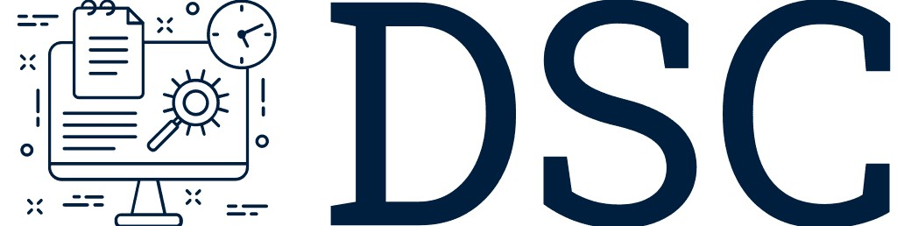

AI coding enablement
Implement AI tools and workflows that improve delivery without lowering code quality.

Dan SmithI help businesses ship robust technology solutions, make useful progress with AI-enabled development workflows, improve cloud infrastructure, and make practical technical decisions that support performance and growth.
I work with businesses that need calm, practical help with software delivery, architecture, infrastructure, AI tooling, or a tricky technical decision.
Implement AI tools and workflows that improve delivery without lowering code quality.
Build and scale web applications and APIs with maintainable architecture.
Clear advice and hands-on support for important product and engineering decisions.
Reliable infrastructure across AWS, Kubernetes, Docker, and modern cloud.
Custom themes, plugins, and CMS integrations built for performance.
Assess systems, prioritise technical work, and turn the next steps into delivery.
JavaScript, TypeScript, PHP, Python, Ruby, Go, Lua, and pragmatic polyglot delivery.
Laravel, Django, Vue, React, Fastify, Tailwind, Bootstrap, APIs, integrations, and maintainable backend systems.
AWS, DigitalOcean, Docker, Kubernetes, Ansible, CI/CD, monitoring, and reliability work.
Data pipelines, collection systems, search, reporting, automation, and product-facing APIs.
ISO 27001, GDPR, governance, technical controls, audit preparation, and operational maturity.
Discovery, architecture, hands-on build, technical planning, supplier support, and recovery work.